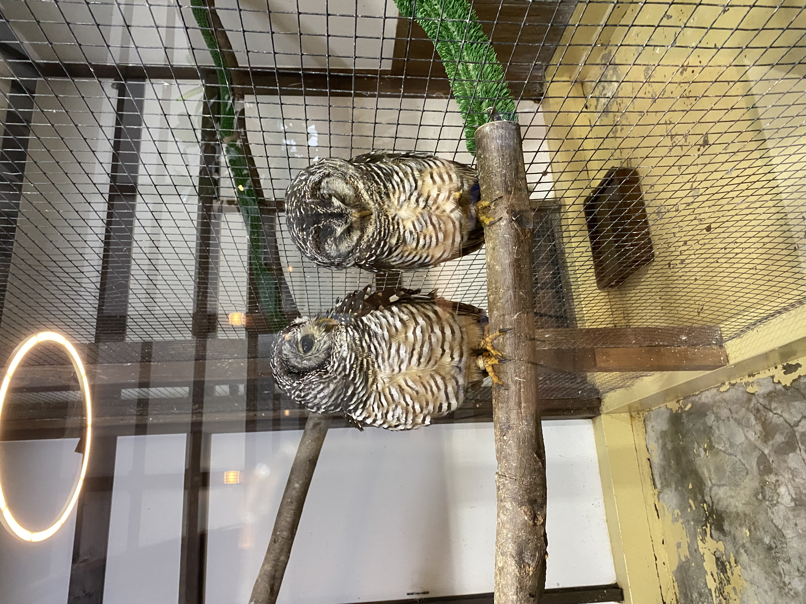

経歴

名前：築地原佳奈
居住地：福岡⇒長崎⇒大阪⇒福岡
| 年 | 月 | 学歴・職歴 |
|---|---|---|
| 2010(平成22年) | 3 | みやま市立山川小学校 卒業 |
| 2010(平成22年) | 4 | みやま市立山川中学校 入学 |
| 2013(平成25年) | 3 | みやま市立山川中学校 卒業 |
| 2013(平成25年) | 4 | 福岡県立伝習館高等学校 入学 |
| 2016(平成28年) | 3 | 福岡県立伝習館高等学校 卒業 |
| 2016(平成28年) | 4 | 長崎県立大学 情報システム学部情報システム学科 入学 |
| 2020(令和2年) | 3 | 長崎県立大学 情報システム学部情報システム学科 卒業 |
| 2020(令和2年) | 4 | ●●株式会社 入社 ※会社名は伏せさせていただきます。 |
| 2026(令和8年) | 4 | ●●株式会社 退職 ※会社名は伏せさせていただきます。 |
スキルセット
- Pythonを用いたiReporter（電子帳票システム）の追加機能開発
- SQL Server/Oracleを用いたデータ処理およびストアドプロシージャ開発
- 製造業・製薬業界におけるシステム開発経験
- 開発～運用保守まで一貫した経験
- サブリーダーとしての進捗管理経験
- 既存システム、並びに新規システムの仕様整理およびドキュメント整備
- HTML/CSSやVBAなどを活用した個人製作
所有資格一覧
| 資格名 | 取得年 | 月 |
|---|---|---|
| ITパスポート | 2016（平成28年) | 8 |
| 漢字検定 2級 | 2016（平成28年) | 9 |
| MOS 2013 Excelスペシャリスト |
2017（平成29年) | 5 |
| MOS 2013 Wordスペシャリスト |
2017（平成29年) | 5 |
| 基本情報技術者試験 | 2018（平成30年) | 4 |
| 普通車AT限定 運転免許 | 2019（令和元年) | 4 |
| TOEIC (最高スコア) 770 |
2019（令和元年) | 9 |
| 色彩検定 2級 | 2019（令和元年) | 10 |
| CG-ARTS協会 CGクリエイター検定 エキスパート |
2019（令和元年) | 11 |
| 秘書検定 2級 | 2020（令和2年) | 2 |
| 応用情報技術者試験 | 2020（令和2年) | 10 |
| CGエンジニア エキスパート | 2021（令和3年) | 7 |
| FP3級 | 2023（令和5年) | 5 |
| FP2級 | 2024（令和6年) | 5 |
| プロジェクトマネージャー試験 | 2024（令和6年) | 10 |
自己PR
「業務をより良くするにはどうすればいいか」を考え、整理・改善することを大切にしています。
現場で培った経験をもとに、まず形にし、使いながら改善していくサイクルを意識しています。
今後も、分かりやすく使いやすい設計と実装を追求していきます。